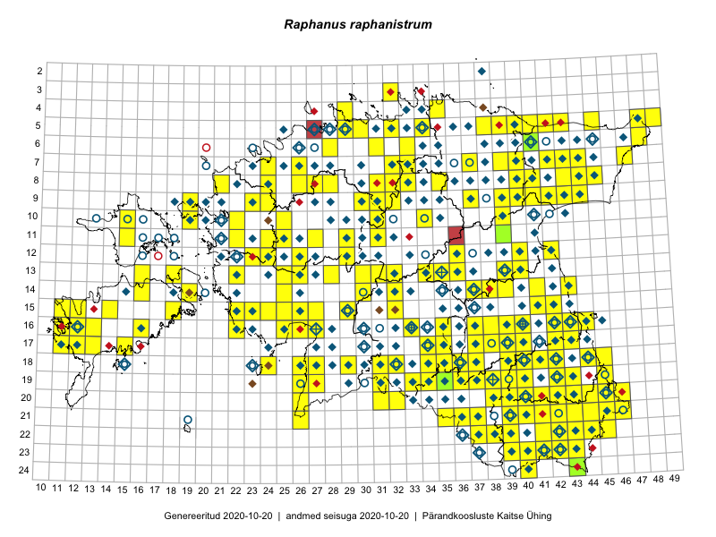

Raphanus raphanistrum
Uuendatud: 2016-12-01
Kaardile koondatud taksonid: Raphanus raphanistrum L.

Kaart põhineb 191 kirjel, neist vaatlusi 189 ja eksemplare 2.
Kuvatud viited 20 esimesele andmebaasikirjele, ülejäänud PlutoFis
- Malle Leht: 2015-07-09: : ala
- Toomas Kukk: 2015-06-23T14:30Z: 21-45: ala
- Thea Kull: 2015-07-07: 16-40: ala
- Toomas Kukk, Peedu Saar: 2014-09-25: 07-42: ala
- Toomas Kukk, Peedu Saar: 2014-09-23: 07-42: ala
- Tiit Hallikma, Toomas Kukk: 2015-07-21: 05-45: ala
- Ott Luuk, Toivo Sepp: 2015-07-29: 09-31: ala
- Peedu Saar, Ott Luuk: 2015-06-21: 14-41: ala
- Peedu Saar: 2015-07-04: 18-45: ala
- Peedu Saar: 2015-07-04: 18-44: ala
- Ott Luuk, Peedu Saar: 2015-08-13: 24-43: ala
- Ott Luuk, Toomas Kukk, Thea Kull, Peedu Saar, Timo Luhamäe: 2015-06-25: 11-24: ala
- Peedu Saar, Eerik Leibak: 2015-07-30: 15-42: ala
- Peedu Saar, Liina Oja: 2015-06-08: 10-34: ala
- Peedu Saar, Liina Oja: 2015-06-12: 13-35: ala
- Ott Luuk, Toivo Sepp: 2015-07-12: 10-31: ala
- Malle Leht: 2015-07-25: 18-40: ala
- Toomas Kukk, Eerik Leibak: 2015-07-29: 16-44: ala
- Malle Leht: 2015-07-28: : ala
- Malle Leht: 2015-07-08: : ala